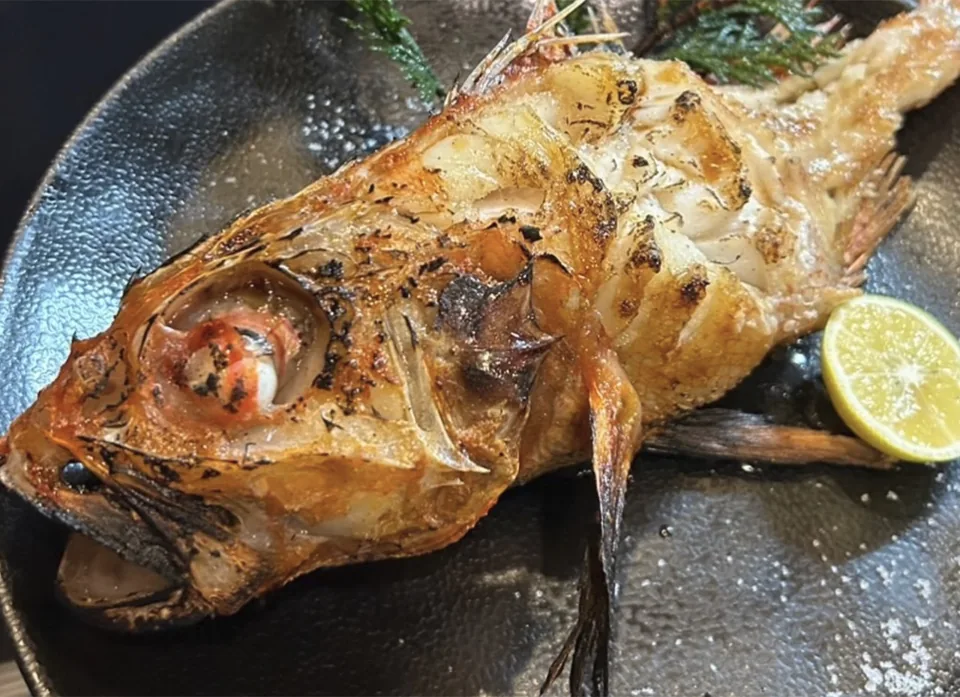
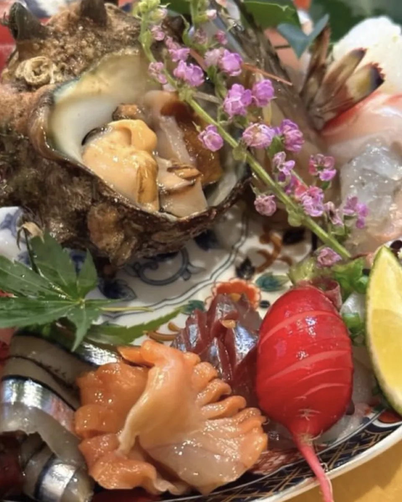
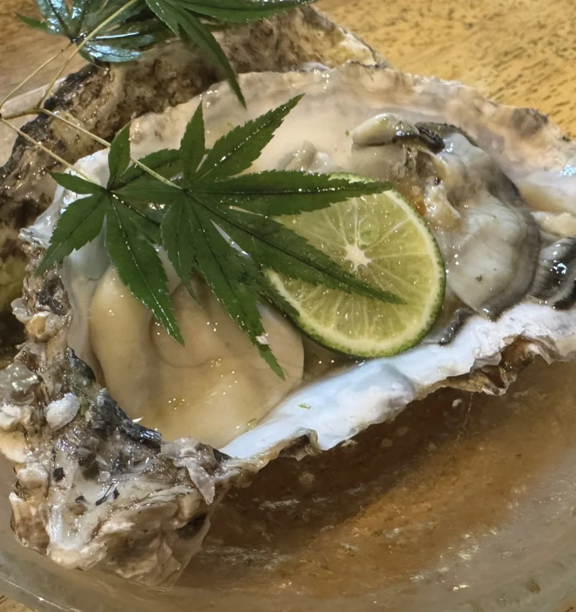

旬ものと日本酒 とみ笑01 — はじまり
街の夜、その奥へ。
夜に、
余熱を。

今夜の、とみ笑へ
荻窪駅北口から、徒歩4分。
02火炭火の時間

炭火の香りを、ひと皿へ。
03旬季節の料理
今日を味わう。
最高の素材を
最高の状態で。
魚、肉、野菜。
季節に合わせた料理を、
お好きなお酒と。


写真はこれまでの料理の一例です。現在の献立・ご希望は、お電話でご相談ください。
04余韻日本酒とカウンター
料理の向こうに、人がいる。
カウンターという、距離。
新潟の
日本酒を味わう
ぜひお酒もお任せください
もちろん選んでいただいても
肩の力を抜いて、今夜のとみ笑を。
05荻窪店舗案内
いつもの街の、少し奥。
今夜は、
とみ笑で。
- 火–木
- 18:00–24:00
- 金・土・祝・祝前
- 18:00–26:00
- 定休日
- 日・月
営業時間・定休日は変更となる場合があります。
ご来店前にお電話でご確認ください。